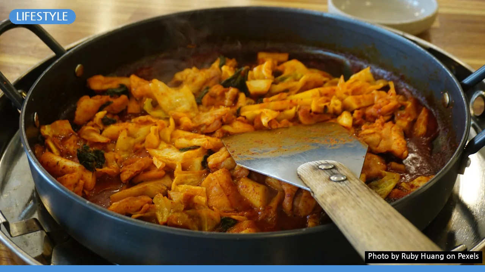
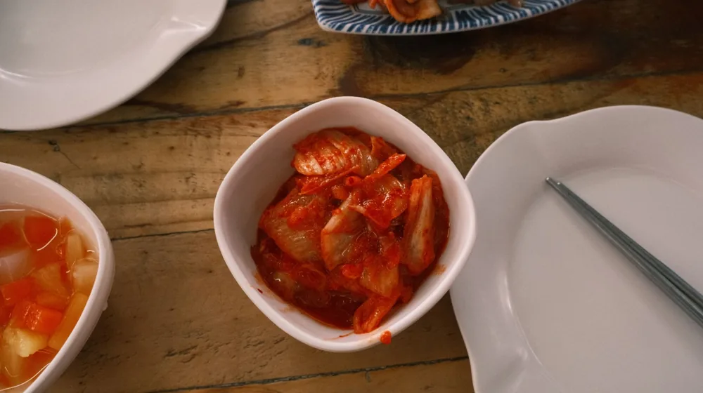

종갓집 내림음식 예약, 이것 모르면 실례! 품격 있는 방문 에티켓
사진: Ruby Huang / Pexels (무료 이미지, 출처 표기)
예약 전 확인 필수! '종갓집' 방문의 기본 마음가짐

종갓집 내림음식 예약은 단순한 외식이 아닌, 유구한 역사와 품격을 지닌 문화를 경험하는 소중한 기회입니다. 하지만 그 품격 있는 공간에서 실례를 범하지 않을까 하는 걱정에 앞서 망설이는 분들이 많습니다. 이 글은 예약부터 식사를 마칠 때까지, 종갓집 방문 시 놓치지 않아야 할 필수 에티켓을 정리하여 여러분의 경험을 더욱 빛낼 수 있도록 돕습니다.
종갓집 내림음식은 단순한 식당 메뉴가 아닙니다. 오랜 세월 가문에서 전해 내려온 정성과 스토리가 담긴 문화유산입니다. 방문객은 이러한 배경을 이해하고 존중하는 태도를 갖추는 것이 중요합니다.
방문 목적이 단순한 호기심을 넘어, 한국의 전통 문화를 체험하고 그 가치를 이해하려는 의도여야 합니다. 이를 통해 더욱 깊이 있는 경험을 할 수 있으며, 종갓집 측에서도 방문객의 진정성을 느낄 수 있습니다.
성공적인 예약을 위한 단계별 체크리스트
종갓집 내림음식은 일반 식당과 달리 사전 예약 시스템으로 운영되는 경우가 대부분입니다. 원활한 방문을 위해 다음 사항들을 꼼꼼히 확인하고 준비해야 합니다.
- **방문 인원 및 날짜/시간:** 정확한 인원과 방문 희망 일시를 미리 정해야 합니다. 특히 종갓집의 경우 준비 시간이 오래 걸리므로, 예약 확정 후 인원 변경은 삼가는 것이 좋습니다.
- **식사 코스 및 특별 요청:** 제공되는 내림음식 코스를 확인하고, 알레르기 유발 식품이나 채식 등 특별히 고려해야 할 사항이 있다면 예약 시 미리 상세히 알려야 합니다.
- **취소 및 변경 정책:** 각 종갓집마다 취소 및 변경에 대한 규정이 다릅니다. 예약 전 반드시 이를 확인하고, 불가피하게 변경이 필요할 경우 최대한 빨리 알려 양해를 구합니다.
- **교통편 및 주차:** 대중교통 이용이 어려운 경우가 많으므로, 자가용 이용 시 주차 가능 여부와 주차 공간을 사전에 확인하는 것이 좋습니다.
- **비용 및 결제 방법:** 예약금 여부, 식사 비용, 결제 가능 수단 등을 명확히 파악하여 방문 당일 혼란이 없도록 합니다.
이러한 사전 준비는 종갓집 측의 원활한 운영을 돕고, 방문객 역시 불편 없이 즐거운 시간을 보낼 수 있게 합니다. 정확한 정보는 각 종갓집의 공식 홈페이지나 안내 채널을 통해 확인하시길 권장합니다.
복장부터 언행까지, 방문 시 지켜야 할 품격 있는 예절
종갓집은 단순한 식사 공간이 아닌, 가문의 역사와 이야기가 살아 숨 쉬는 곳입니다. 이곳을 방문할 때는 그 분위기에 맞는 예의를 갖추는 것이 중요합니다.
단정한 복장은 기본입니다. 너무 과하게 노출되거나 찢어진 청바지 등 캐주얼한 의상보다는 깔끔하고 단정한 옷차림을 선택하는 것이 좋습니다. 실내에서는 정숙한 태도를 유지하고, 큰 목소리로 대화하거나 소란을 피우는 행동은 삼가야 합니다. 또한, 종갓집 내부의 물건이나 공간을 함부로 만지거나 허가 없이 사진을 촬영하는 것은 피해야 합니다. 특히 초상권이 있는 인물이나 사적인 공간의 촬영은 자제해야 합니다. 어린아이와 동반하는 경우, 아이가 뛰어다니거나 큰 소리를 내지 않도록 사전에 교육하고 주의를 기울여야 합니다. 다른 방문객이나 종갓집 가족에게 방해가 되지 않도록 항상 배려하는 마음을 갖는 것이 중요합니다.
식사 중 유의할 점: 내림음식의 가치를 존중하며
종갓집 내림음식은 오랜 시간과 정성을 들여 준비됩니다. 따라서 식사 중에도 그 노고를 존중하는 자세가 필요합니다.
음식은 차려진 순서대로 맛보고 음미하는 것이 예의입니다. 여러 음식을 한꺼번에 휘젓거나 과하게 개인 접시에 담는 행동은 보기 좋지 않습니다. 또한, 음식을 남기지 않으려 노력하되, 억지로 모든 음식을 다 먹을 필요는 없습니다. 반찬 리필이나 추가 주문에 대해서는 종갓집의 방침을 따르며, 무리한 요구는 하지 않도록 합니다. 식사를 마친 후에는 사용한 식기를 한곳에 가지런히 모아두면 좋습니다. 이는 식사를 준비하고 치우는 사람에 대한 작은 배려의 표현입니다.
궁금한 점은 미리, 종갓집 방문 에티켓 Q&A
종갓집 방문을 앞두고 자주 궁금해하는 질문들을 모아 정리했습니다.
Q1: 종갓집에서 음식 사진을 찍어도 되나요?
A1: 대부분의 종갓집은 내림음식의 아름다움을 기록하는 것을 허용하지만, 타인의 얼굴이 나오거나 사적인 공간을 침해하는 촬영은 삼가야 합니다. 식사 전이나 후, 혹은 음식 자체만 촬영하는 것이 좋습니다. 궁금하다면 예약 시 미리 문의하거나 방문 당일 동의를 구하는 것이 가장 확실합니다.
Q2: 식사 중 휴대전화 사용은 어디까지 허용되나요?
A2: 식사 중에는 가급적 휴대전화 사용을 자제하고, 진동 모드로 전환하여 다른 사람에게 방해가 되지 않도록 합니다. 중요한 통화는 식사 공간을 벗어나 조용히 나누는 것이 좋습니다. 내림음식과 함께하는 소중한 사람들과의 시간에 집중해주세요.
Q3: 종갓집 방문 시 선물을 준비해야 하나요?
A3: 필수는 아니지만, 감사한 마음에 작은 선물을 준비하는 것은 좋은 인상을 남길 수 있습니다. 너무 값비싼 선물보다는 한국의 전통미를 살린 소박한 공예품이나 지역 특산품 등이 적절할 수 있습니다. 중요한 것은 마음을 담는 것입니다.
종갓집 내림음식 예약과 방문은 단순히 맛있는 음식을 먹는 것을 넘어, 한국의 전통과 문화를 체험하는 깊이 있는 여정입니다. 위에서 안내해 드린 에티켓을 숙지하고 실천함으로써, 여러분은 종갓집의 품격을 존중하고 자신 또한 품격 있는 손님으로 기억될 수 있을 것입니다. 이러한 경험이 여러분의 삶에 특별한 추억으로 남기를 바랍니다.
🔗 이 글도 함께 보면 좋아요: 음식 버리기 전 필수 확인! 유통기한·소비기한 차이와 실제 보관법
관련 추천 상품
이 포스팅은 쿠팡 파트너스 활동의 일환으로, 이에 따른 일정액의 수수료를 제공받습니다.